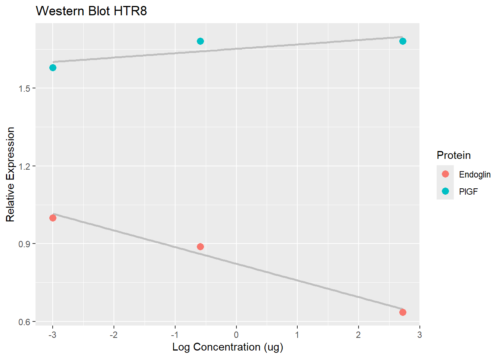
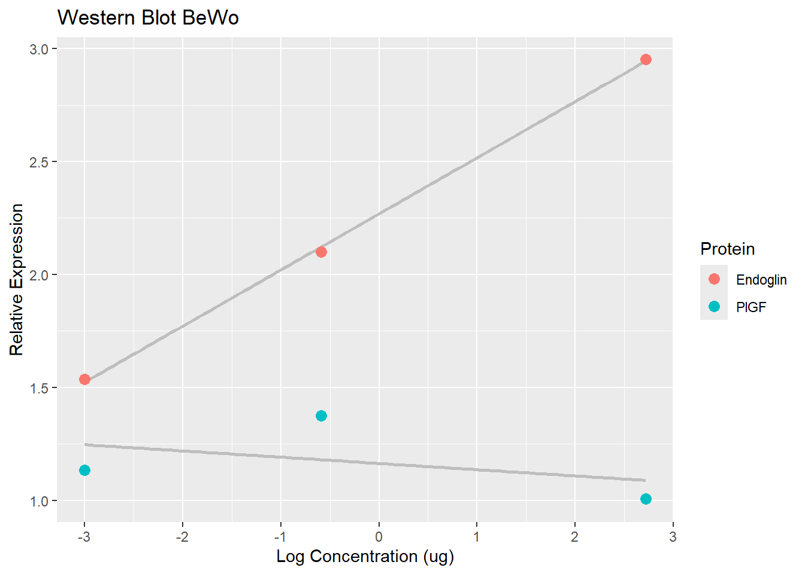

Call:
lm(formula = exp ~ conc, data = Havg, subset = prot == "Endoglin" &
tipo == "mean")
Residuals:
4 8 12 16
3.738e-02 3.675e-02 -7.417e-02 3.614e-05
Coefficients:
Estimate Std. Error t value Pr(>|t|)
(Intercept) 0.9626183 0.0370847 25.957 0.00148 **
conc -0.0006231 0.0001415 -4.405 0.04787 *
---
Signif. codes: 0 '***' 0.001 '**' 0.01 '*' 0.05 '.' 0.1 ' ' 1
Residual standard error: 0.06422 on 2 degrees of freedom
Multiple R-squared: 0.9066, Adjusted R-squared: 0.8598
F-statistic: 19.4 on 1 and 2 DF, p-value: 0.04787
The regression fitted to the expression of endoglin shows a significant angular coefficient very close to zero, but that is negative and could be interpreted as a minor negative effect of the treatment.
Call:
lm(formula = exp ~ log, data = Havg, subset = prot == "PlGF" &
tipo == "mean")
Residuals:
24 28 32
-0.02252 0.03890 -0.01638
Coefficients:
Estimate Std. Error t value Pr(>|t|)
(Intercept) 1.65218 0.02783 59.368 0.0107 *
log 0.01687 0.01178 1.433 0.3880
---
Signif. codes: 0 '***' 0.001 '**' 0.01 '*' 0.05 '.' 0.1 ' ' 1
Residual standard error: 0.04784 on 1 degrees of freedom
(1 observation deleted due to missingness)
Multiple R-squared: 0.6724, Adjusted R-squared: 0.3447
F-statistic: 2.052 on 1 and 1 DF, p-value: 0.388
#creating a new data frame with 100 values between the max and the min#log valuevisuHE <-data.frame( log =seq(min( Havg$log[is.finite( Havg$log )] ),max( Havg$log[is.finite( Havg$log )] ),length.out =100 ))#Adding an expression response for each point based in the regressionvisuHE$pred <-predict( modelHE, visuHE)View(visuHE)visuHP <-data.frame(log =seq(min( Havg$log[is.finite( Havg$log )] ),max( Havg$log[is.finite( Havg$log )] ),length.out =100 ))visuHP$pred <-predict( modelHP, visuHP)#plotting the regression linesggplot(data =subset( Havg, tipo =="mean" )) +geom_line(data = visuHP,aes(x = log,y = pred ),color ="grey",linewidth =1 ) +geom_line(data = visuHE,aes(x = log,y = pred ),color ="grey",linewidth =1 ) +geom_point(mapping =aes(x = log, y = exp, colour = prot ),size =3 ) +labs(title ="Western Blot HTR8",x ="Log Concentration (ug)",y ="Relative Expression",colour ="Protein" )
Warning: Removed 2 rows containing missing values or values outside the scale range
(`geom_point()`).

BeWo
Bavg$log <-ifelse( Bavg$conc >0,log10( Bavg$conc ),NA)#creating a log column, transforming Log0 in NAsView(Bavg)head(Bavg)
exp conc prot tipo log
1 1.130161 0.000 Endoglin replicate NA
2 0.257415 0.000 Endoglin replicate NA
3 1.612424 0.000 Endoglin replicate NA
4 1.000000 0.000 Endoglin mean NA
5 2.245366 0.001 Endoglin replicate -3
6 0.685872 0.001 Endoglin replicate -3
Plotting the data
ggplot(data =subset( Bavg, tipo =="mean" )) +geom_point(mapping =aes(x = log, y = exp, colour = prot ),size =3 ) +labs(title ="Western Blot BeWo",x ="Log Concentration (ug)",y ="Relative Expression",colour ="Protein" )
Warning: Removed 2 rows containing missing values or values outside the scale range
(`geom_point()`).
Warning: Removed 2 rows containing missing values or values outside the scale range
(`geom_point()`).

Analyzing now these data, we acquired a significant angular coefficient for Endoglin on BeWo cells. With the coefficient being positive, we shall discuss that the treatment may cause a positive effect in the expression of Endoglin.